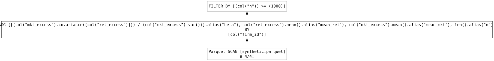

import inspect
import polars as pl
import duckdb
import json
import subprocess
import sys
from pathlib import Path
import numpy as np
from datetime import date, timedeltaComparing .group_by_dynamic() with DuckDB equivalent
Recently, I wrote a Polars query to calculate 60-month betas (i.e., regression coefficients) for each firm and each month in a sample of stock price data. The pandas code in the original book from which the query originates uses a cumbersome batch-processing approach to minimize RAM consumption. I had figured that Polars would do fine with this query, but when I ran it in its original form it used up over 80 GB of RAM before failing (I only have 24 GB of physical RAM in my Mac mini M4 Pro).
My guess is that Polars is creating copies of the data to construct each window. I don’t know anything about the internals of Polars, but this copying seems unnecessary in principle. I believe that PostgreSQL uses the windows in place without copying. The window here are sixty months of daily return data with the resulting calculations for each firm being retained the first day of each month.
To create a reproducible test, I create synthetic data (a little smaller than the original) and save it in Parquet format. I then run the key elements of the Polar query on this data set and, as a proxy for PostgreSQL, I use DuckDB to do the same query.
In summary, I find that DuckDB runs much faster and uses much less RAM than Polars. I conjecture that this is because DuckDB is not copying data to form each window.
Generate the data
Here I generate some synthetic data and save it in a Parquet file. Apart from potentially facilitating a streaming engine (not available in this case at this time), this makes it easy to do the same query in DuckDB and Polars.
def write_synth_parquet(
path: str | Path,
n_firms: int = 10_000,
n_days: int = 2_500,
seed: int = 0,
):
path = Path(path)
rng = np.random.default_rng(seed)
start = date(2000, 1, 1)
dates = np.array(
[start + timedelta(days=i) for i in range(n_days)],
dtype="datetime64[D]",
)
df = pl.DataFrame(
{
"firm_id": np.repeat(np.arange(n_firms, dtype=np.int32), n_days),
"date": np.tile(dates, n_firms),
"ret_excess": rng.normal(0.0, 0.02, n_firms * n_days),
"mkt_excess": rng.normal(0.0, 0.02, n_firms * n_days),
}
).sort("firm_id", "date")
df.write_parquet(path)
return path
path = write_synth_parquet("synthetic.parquet")This build_results_lz() function builds the lazy query for Polars.
def build_results_lz(min_obs: int = 1000) -> pl.LazyFrame:
return (
pl.scan_parquet("synthetic.parquet")
.group_by_dynamic(
"date",
every="1mo",
period="60mo",
offset="-60mo",
group_by="firm_id",
closed="left",
label="right",
)
.agg(
beta=pl.cov("mkt_excess", "ret_excess") / pl.col("mkt_excess").var(),
mean_ret=pl.col("ret_excess").mean(),
mean_mkt=pl.col("mkt_excess").mean(),
n=pl.len(),
)
.filter(pl.col("n") >= min_obs)
)This collect_polars() function actually executes the Polars query.
def collect_polars(min_obs: int = 1000) -> pl.DataFrame:
return (
build_results_lz(min_obs)
.collect()
)Here is the equivalent query in DuckDB:
def run_duckdb(min_obs: int = 1000) -> pl.DataFrame:
con = duckdb.connect()
query = f"""
SELECT
firm_id,
date,
covar_pop(mkt_excess, ret_excess) OVER w
/ var_pop(mkt_excess) OVER w AS beta,
avg(ret_excess) OVER w AS mean_ret,
avg(mkt_excess) OVER w AS mean_mkt,
count(*) OVER w AS n
FROM 'synthetic.parquet'
WINDOW w AS (
PARTITION BY firm_id
ORDER BY date
RANGE BETWEEN INTERVAL 60 MONTH PRECEDING AND INTERVAL 1 DAY PRECEDING
)
QUALIFY
date = date_trunc('month', date)
AND count(*) OVER w >= {min_obs}
ORDER BY firm_id, date
"""
return con.sql(query).pl()` Here I analyze the lazy query from above.
results_lz = build_results_lz()
results_lz.show_graph(engine="streaming")
And here I run the query.
results_pl = results_lz.collect()Here’s the resulting data frame from the Polars code.
results_pl
shape: (770_000, 6)
| firm_id | date | beta | mean_ret | mean_mkt | n |
|---|---|---|---|---|---|
| i32 | date | f64 | f64 | f64 | u32 |
| 0 | 2002-10-01 | -0.039092 | -0.000918 | 0.000849 | 1004 |
| 0 | 2002-11-01 | -0.033704 | -0.000958 | 0.000822 | 1035 |
| 0 | 2002-12-01 | -0.040931 | -0.000945 | 0.000837 | 1065 |
| 0 | 2003-01-01 | -0.044087 | -0.000878 | 0.000795 | 1096 |
| 0 | 2003-02-01 | -0.042791 | -0.000677 | 0.000739 | 1127 |
| … | … | … | … | … | … |
| 9999 | 2008-10-01 | 0.070324 | -0.000556 | -0.000305 | 1131 |
| 9999 | 2008-11-01 | 0.066293 | -0.000484 | -0.00019 | 1100 |
| 9999 | 2008-12-01 | 0.07572 | -0.000493 | -0.00027 | 1070 |
| 9999 | 2009-01-01 | 0.078804 | -0.000559 | -0.000316 | 1039 |
| 9999 | 2009-02-01 | 0.082845 | -0.000671 | -0.000187 | 1008 |
Next I run the DuckDB query.
results_db = run_duckdb()Here’s the resulting data frame from the DuckDB code.
results_db
shape: (500_000, 6)
| firm_id | date | beta | mean_ret | mean_mkt | n |
|---|---|---|---|---|---|
| i32 | date | f64 | f64 | f64 | i64 |
| 0 | 2002-10-01 | -0.039092 | -0.000918 | 0.000849 | 1004 |
| 0 | 2002-11-01 | -0.033704 | -0.000958 | 0.000822 | 1035 |
| 0 | 2002-12-01 | -0.040931 | -0.000945 | 0.000837 | 1065 |
| 0 | 2003-01-01 | -0.044087 | -0.000878 | 0.000795 | 1096 |
| 0 | 2003-02-01 | -0.042791 | -0.000677 | 0.000739 | 1127 |
| … | … | … | … | … | … |
| 9999 | 2006-07-01 | 0.039539 | 0.000262 | -0.000519 | 1826 |
| 9999 | 2006-08-01 | 0.042314 | 0.000252 | -0.000535 | 1826 |
| 9999 | 2006-09-01 | 0.04111 | 0.000113 | -0.000553 | 1826 |
| 9999 | 2006-10-01 | 0.043062 | 0.000111 | -0.00053 | 1826 |
| 9999 | 2006-11-01 | 0.04825 | 0.000081 | -0.000481 | 1826 |
I merge the two sets of results to confirm that they are (essentially) identical.
import polars.selectors as cs
joined = (
results_db
.join(
results_pl,
on=["firm_id", "date"],
suffix="_right",
)
)From the following, we can see that Polars and DuckDB are producing the same results (up to machine precision).
diff_summary = (
joined
.select([
(pl.col(c) - pl.col(f"{c}_right")).abs().max().alias(f"{c}_max_abs_diff")
for c in joined.select(
cs.exclude("firm_id", "date", cs.ends_with("_right"))
).columns
])
)
diff_summary
shape: (1, 4)
| beta_max_abs_diff | mean_ret_max_abs_diff | mean_mkt_max_abs_diff | n_max_abs_diff |
|---|---|---|---|
| f64 | f64 | f64 | i64 |
| 4.7184e-16 | 1.3010e-18 | 1.5179e-18 | 0 |
Benchmark
Here’s some code to run benchmark analysis.
Show code
def run_benchmark(name: str, fn, *helpers) -> dict:
helper_sources = "\n\n".join(inspect.getsource(helper) for helper in helpers)
fn_source = inspect.getsource(fn)
runner = f"""
import duckdb
import json
import polars as pl
import resource
import time
{helper_sources}
{fn_source}
start = time.perf_counter()
results = {fn.__name__}()
elapsed_seconds = time.perf_counter() - start
peak_rss = resource.getrusage(resource.RUSAGE_SELF).ru_maxrss
print(json.dumps({{
"name": {name!r},
"elapsed_seconds": elapsed_seconds,
"peak_rss_bytes": peak_rss,
}}))
"""
proc = subprocess.run(
[sys.executable, "-c", runner],
check=True,
capture_output=True,
text=True,
)
stdout_lines = [line for line in proc.stdout.splitlines() if line.strip()]
if not stdout_lines:
raise RuntimeError(f"{name} benchmark produced no stdout")
return json.loads(stdout_lines[-1])
def benchmark_table(*benchmarks: dict) -> pl.DataFrame:
return (
pl.DataFrame(benchmarks)
.with_columns(
elapsed_ms=(pl.col("elapsed_seconds") * 1000).round(2),
peak_rss_mb=(pl.col("peak_rss_bytes") / (1024 * 1024)).round(2),
)
.select("name", "elapsed_seconds", "elapsed_ms", "peak_rss_bytes", "peak_rss_mb")
.sort("elapsed_seconds")
)And here’s the benchmark analysis.
polars_collect_benchmark = run_benchmark(
"polars_collect",
collect_polars,
build_results_lz,
)
duckdb_benchmark = run_benchmark("duckdb_window", run_duckdb)
benchmark_table(polars_collect_benchmark, duckdb_benchmark)
shape: (2, 5)
| name | elapsed_seconds | elapsed_ms | peak_rss_bytes | peak_rss_mb |
|---|---|---|---|---|
| str | f64 | f64 | i64 | f64 |
| "duckdb_window" | 5.484154 | 5484.15 | 2653814784 | 2530.88 |
| "polars_collect" | 89.410132 | 89410.13 | 9276981248 | 8847.22 |